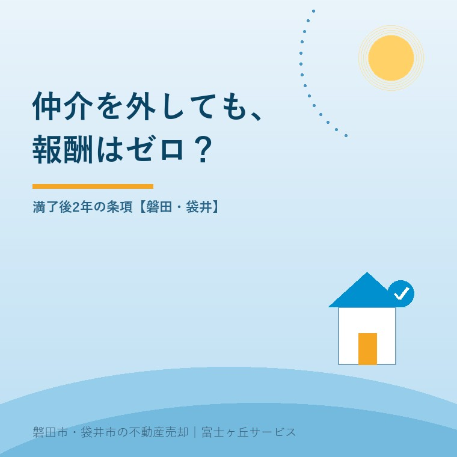

仲介を外す直接取引、満了後2年の報酬は？
2026年10月4日｜カテゴリ：コスト・仲介手数料

この記事の要点
媒介契約は終わった。前に紹介された買主と直接売買なら手数料は不要？
契約満了だけで報酬がゼロになるとは限りません。標準媒介契約約款は、満了後2年以内でも紹介相手との業者を排除した直接取引に、寄与割合に応じた報酬請求を定めます。一律満額の規定ではありません。磐田市・袋井市・森町では、介護施設の運営から不動産事業を始めた富士ヶ丘サービスのような地域密着の会社に相談する選択肢があります。
大石浩之（磐田市／不動産業）です。媒介契約を更新しなかった後、以前内覧に来た買主から直接連絡が来る。「会社を通さなければ、お互い手数料を節約できる」。そんな提案を受けたとき、契約が終わったという一点だけで返事をしないでください。
国土交通省は毎年10月を土地月間、10月1日を土地の日としています。2026年10月4日の本記事では、契約書の費用条項を点検します。直接取引の報酬条項は、10月から新しくできた制度ではありません。
標準約款は、満了後2年以内の直接取引も対象にする
国土交通省の標準専任媒介契約約款第11条には、直接取引の定めがあります。業者の紹介で知った相手と、その業者を排除して売買等の契約を結んだ場合の扱いです。対象期間は媒介契約の有効期間内、または満了後2年以内です。
請求できるとされるのは、契約の成立に寄与した割合に応じた相当額の報酬です。寄与とは、売買がまとまるまでに、紹介や調整などがどれだけ役立ったかということです。条文は、一律に通常の仲介報酬を満額払うとは書いていません。
確認したのは2024年4月1日施行版です。標準一般媒介契約約款第13条にも同趣旨の規定があります。複数社へ依頼できる一般媒介なら、紹介してくれた会社を外す費用の問題は起きない、という理解はできません。
契約期間が終わると、業者との関係がすべて消えるように感じるかもしれません。しかし、標準約款は紹介した相手との取引について、満了後の期間も定めています。意外でも、更新しなかったことだけでは報酬ゼロの根拠になりません。
私は、仲介の働きを使って相手を知り、最後だけ会社を外す場合の扱いを定めることには意味があると考えます。紹介や条件調整に費やした仕事が、契約の直前に見えなくなるのでは、仲介を引き受ける仕組みが成り立ちにくくなるからです。
その上で仲介会社には、請求する側にも説明の責任があると言いたい。条文を見せて「2年以内だから払って」だけでは足りません。どの業務が成立に寄与し、金額をどう考えたのか。売主が内容を確かめられる資料を出すべきです。
通常の報酬・直接取引の報酬・違約金は別に読む
売主が費用の説明を受けるときは、通常の仲介報酬、直接取引による報酬、契約違反の違約金を分けて確認します。いずれも業者へ払う可能性のあるお金ですが、発生する条件と算定の根拠が違います。
| 費用の種類 | 標準専任約款の条項 | 読むべき条件 |
|---|---|---|
| 通常の報酬 | 第8条 | 業者の媒介で契約が成立した場合 |
| 直接取引の報酬 | 第11条 | 紹介相手と業者を排除して成約、寄与割合に応じた相当額 |
| 違約金 | 第12条 | 期間内に他業者へ依頼し、その依頼で成約した場合 |
標準専任媒介契約約款第12条は、有効期間内に他の宅地建物取引業者へ依頼し、成約した場合の違約金を定めています。第11条の直接取引とは別の規定です。「会社を替えた」「直接売った」という言葉だけで、同じ請求として扱わないようにします。
通常の仲介手数料の仕組みは、仲介手数料の内訳と上限の考え方で整理しています。上限の計算ができることと、今回その額を請求する根拠があることは別です。先に請求の種類を特定し、それから金額を見ます。
私は、家族のメモにも請求名目を一つずつ書くよう提案します。報酬の話をしていたはずが、次の電話では違約金と呼ばれている。そんなときは支払総額だけを追わず、書面に戻って根拠条項を確認します。名称を変えた説明だけで納得しないことです。
寄与割合について、この記事で仮の半額や何割という目安は置きません。公式約款には一律の割合表がありません。根拠のない割引率を覚えるより、業務記録と成立までの経緯をそろえる方が、具体的な話合いに使えます。
紹介された相手か、自分で見つけた相手かを確かめる
直接取引条項を検討する出発点は、売主が買主をどのように知ったかです。標準約款は、業者の紹介で知った相手との取引を対象にしています。買主から直接連絡が来たという現在の連絡方法だけでは、最初の紹介経緯は分かりません。
内覧を手配した会社、最初の購入希望を伝えた人、価格や引渡し時期を調整した記録を並べます。メール、内覧報告、買付けの控え、媒介業務の報告が手がかりです。口頭の記憶だけでなく、日付が残るものを優先して整理します。
| 時点 | 残す事実 | 対応する資料 |
|---|---|---|
| 買主を知ったとき | 誰が、どの物件を紹介したか | 紹介メール・案内記録 |
| 媒介契約の終了時 | 満了日・更新の有無 | 契約書・終了の連絡 |
| 直接の提案を受けたとき | 提案日・価格・条件 | 買主からの連絡 |
以前から顔を知っていた人でも、今回の家の購入へどうつながったかは別に整理します。逆に、業者が何か広告を出していたというだけで、すべての買主をその業者の紹介と決めつけることもしません。双方の説明に食い違いがあれば、そこを争点として残します。
自ら発見した相手との取引も、契約の種類を確認します。標準専任約款には事前の通知や費用償還に関する別条項があり、専属専任は自己発見取引の扱いも違います。専任媒介と一般媒介の違いを手がかりに、手元の契約を開いてください。
満了後2年という数字を、紹介経緯を隠すための待機期間として使う話でもありません。ここで説明しているのは標準約款の条項です。別の合意や事情まで含めて、2年を過ぎればあらゆる請求が消えると保証するものではありません。個別の契約解釈は専門家に確認を。
磐田・袋井の売主は、請求額より先に経緯を一枚に
磐田市・袋井市の実家を売る家族には、媒介契約を結んだ本人と、買主から連絡を受ける家族の間で情報をそろえるよう提案します。親の施設入居や相続の後、連絡窓口だけが子へ移っても、契約の経緯まで自動で引き継がれるわけではありません。
私はこう考えます。業者を外せばゼロ円、も乱暴だ。紹介したから満額、も乱暴だ。不動産屋として報酬を軽く見られたくはありません。それでも、売主へ金額を出すなら説明できなければ駄目です。業者の仕事と持ち主の負担を、同じ資料の上で確かめるべきです。
私なら、家族が受け取った直接購入の連絡を見たら、まず返事を保留するよう案内します。次に契約書の期間と直接取引条項を開き、紹介の記録を横に置きます。これは私の判断手順で、体験談ではありません。安くなるという期待より、後から残る請求を先に整理します。
迷うのは、紹介後に長く交渉が止まり、売主と買主だけで条件を練り直した場合です。最初の紹介と、その後の合意のどちらがどれだけ効いたか。記事を読むだけで割合は決まりません。だから私は、相当額を勝手に計算せず、記録を持って専門家に確認するよう案内します。
家計で見れば、直接契約で残るお金は、仲介手数料の表示だけでは決まりません。報酬の争いが残るか、契約書の確認を誰に頼むか、登記をどう進めるかも整理が要ります。費用項目の確認と、実際の依頼先の見積もりを分けてそろえます。
媒介契約の終了を検討している段階なら、媒介契約を更新するか、会社を替えるかの判断も参照できます。契約を終える理由と、紹介済みの買主の扱いを同じ時点で確認すると、終了後の連絡にも対応しやすくなります。
直接契約の返事をする前に、根拠を書面で求める
直接購入の提案を受けた売主が今日する確認は、媒介契約書の該当箇所と、紹介経緯の記録を一緒に出すことです。請求が来ているなら「適用条項、業務内容、成立への寄与、金額の算定根拠を文書で確認したい」と伝えます。
- 契約の種類、満了日、更新の有無を確認する。
- 買主を知った経緯と、会社の業務記録をそろえる。
- 報酬と違約金を分け、請求根拠を確かめる。
富士ヶ丘サービスは介護と不動産を一体で相談し、磐田・袋井の家族が困らない売却を支援します。私は、売主にも業者にも都合のよい決めつけをせず、根拠をそろえてから話すよう案内します。請求の可否や金額に争いがある場合は、弁護士などの専門家に確認を。
よくある質問
仲介を外す直接取引、満了後2年の報酬は？について、判断前に確かめたい点を整理します。
- 媒介契約の満了後なら、以前の買主と直接契約しても無料ですか？
- 標準専任媒介契約約款第11条は、有効期間内または満了後2年以内の所定の直接取引を対象にしています。業者の紹介で知った相手と、その業者を排除して売買等を成立させた場合の条項です。満了の事実だけで無料とは判断できません。手元の契約書と紹介経緯を照合し、具体的な請求の可否は専門家に確認を。
- 直接取引の報酬は、通常の仲介手数料と同じ満額ですか？
- 標準約款の直接取引条項は、契約成立への寄与割合に応じた相当額と定めています。一律に通常の報酬全額を払うという文章ではありません。ただし、必ず減額になると断定できる定めでもありません。請求されたら適用条項、業務の内容、成立への寄与、算定根拠を文書で確認します。金額に争いがある場合は専門家に確認を。
- 一般媒介なら、紹介された買主との直接取引に問題はありませんか？
- 標準一般媒介契約約款第13条にも、紹介相手との直接取引について同趣旨の報酬条項があります。複数の業者に依頼できることと、紹介した業者を外した取引の扱いは別です。買主を知った経緯と各社が行った業務を整理します。自ら発見した相手との取引も、契約の種類や通知・費用の条項を確かめ、個別判断は専門家に確認を。

この記事を書いた人：大石浩之（磐田市／不動産業・宅地建物取引士）
富士ヶ丘サービス株式会社。介護施設の運営から不動産事業を始め、磐田市・袋井市・森町で、介護と相続、実家の売却を一体で相談できる窓口を設けています。家族が困らない売却のため、資料と現地の条件を一件ずつ整理します。著者プロフィール
本記事は2026年10月4日時点の公開情報と筆者の意見です。制度・数値・手続き・契約条件は変更されることがあります。税務・登記・相続・重要事項説明・契約などの個別判断は、税理士・司法書士・弁護士などの専門家に確認を。